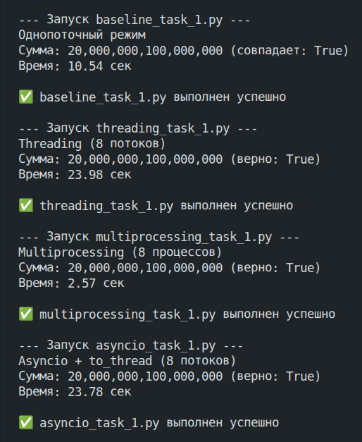

Задача 1. Различия между threading, multiprocessing и async в Python
Описание задания
Задача: Напишите три различных программы на Python, использующие каждый из подходов: threading, multiprocessing и async. Каждая программа должна решать считать сумму всех чисел от 1 до 10000000000000. Разделите вычисления на несколько параллельных задач для ускорения выполнения.
Подробности задания:
- Напишите программу на Python для каждого подхода:
threading,multiprocessingиasync. - Каждая программа должна содержать функцию
calculate_sum(), которая будет выполнять вычисления. - Для
threadingиспользуйте модульthreading, дляmultiprocessing- модульmultiprocessing, а дляasync- ключевые словаasync/awaitи модульasyncio. - Каждая программа должна разбить задачу на несколько подзадач и выполнять их параллельно.
- Замерьте время выполнения каждой программы и сравните результаты.
Выполнение задания
Так как вычисление суммы всех чисел от 1 до N=10000000000000 (10^13) заняло бы слишком много времени, даже если использовать параллельные вычисления, то было решено уменьшить N до более маленького значения в 200_000_000, которое с одной стороны позволит провести вычисления в разумное время, а с другой - всё-равно достаточно большое, чтобы увидеть разницу при применении разных подходов.
Далее были реализованы следующие программы:
1. baseline_task_1.py
Простое однопоточное решение "в лоб", которое будет использоваться в качестве эталона для оценки всех остальных подходов.
import time
N = 200_000_000
def calculate_sum(start, end):
total = 0
for i in range(start, end + 1):
total += i
return total
def single_thread():
start_time = time.perf_counter()
total = calculate_sum(1, N)
elapsed = time.perf_counter() - start_time
return total, elapsed
if __name__ == "__main__":
total, elapsed = single_thread()
expected = N * (N + 1) // 2
print(f"Однопоточный режим")
print(f"Сумма: {total:,} (совпадает: {total == expected})")
print(f"Время: {elapsed:.2f} сек")
2. threading_task_1.py
Программа, которая создаёт несколько отдельных потоков операционной системы и распределяет вычисления между ними.
import threading
import time
N = 200_000_000
NUM_WORKERS = 8
def calculate_sum(start, end, results, idx):
total = 0
for i in range(start, end + 1):
total += i
results[idx] = total
def main_threading():
step = N // NUM_WORKERS
ranges = []
for i in range(NUM_WORKERS):
start = i * step + 1
end = (i + 1) * step if i != NUM_WORKERS - 1 else N
ranges.append((start, end))
results = [0] * NUM_WORKERS
threads = []
start_time = time.perf_counter()
for idx, (s, e) in enumerate(ranges):
t = threading.Thread(target=calculate_sum, args=(s, e, results, idx))
threads.append(t)
t.start()
for t in threads:
t.join()
elapsed = time.perf_counter() - start_time
total = sum(results)
return total, elapsed
if __name__ == "__main__":
total, elapsed = main_threading()
expected = N * (N + 1) // 2
print(f"Threading ({NUM_WORKERS} потоков)")
print(f"Сумма: {total:,} (верно: {total == expected})")
print(f"Время: {elapsed:.2f} сек")
3. multiprocessing_task_1.py
Программа, которая создаёт несколько независимых процессов ОС (каждый процесс со своим интерпретатором Python) и распределяет вычисления между ними.
import multiprocessing
import time
N = 200_000_000
NUM_WORKERS = 8
def calculate_sum(start, end):
total = 0
for i in range(start, end + 1):
total += i
return total
def main_multiprocessing():
step = N // NUM_WORKERS
ranges = []
for i in range(NUM_WORKERS):
start = i * step + 1
end = (i + 1) * step if i != NUM_WORKERS - 1 else N
ranges.append((start, end))
start_time = time.perf_counter()
with multiprocessing.Pool(processes=NUM_WORKERS) as pool:
results = pool.starmap(calculate_sum, ranges)
elapsed = time.perf_counter() - start_time
total = sum(results)
return total, elapsed
if __name__ == "__main__":
multiprocessing.freeze_support()
total, elapsed = main_multiprocessing()
expected = N * (N + 1) // 2
print(f"Multiprocessing ({NUM_WORKERS} процессов)")
print(f"Сумма: {total:,} (верно: {total == expected})")
print(f"Время: {elapsed:.2f} сек")
4. asyncio_task_1.py
Программа с использованием asyncio и async/await, которая создаёт несколько корутин в рамках одного потока и распределяет вычисления между ними.
import asyncio
import time
N = 200_000_000
NUM_WORKERS = 8
def calculate_sum(start, end):
total = 0
for i in range(start, end + 1):
total += i
return total
async def calculate_sum_async(start, end):
return await asyncio.to_thread(calculate_sum, start, end)
async def main_async():
step = N // NUM_WORKERS
ranges = []
for i in range(NUM_WORKERS):
start = i * step + 1
end = (i + 1) * step if i != NUM_WORKERS - 1 else N
ranges.append((start, end))
tasks = [calculate_sum_async(s, e) for s, e in ranges]
results = await asyncio.gather(*tasks)
return sum(results)
def run_async():
start_time = time.perf_counter()
total = asyncio.run(main_async())
elapsed = time.perf_counter() - start_time
return total, elapsed
if __name__ == "__main__":
total, elapsed = run_async()
expected = N * (N + 1) // 2
print(f"Asyncio + to_thread ({NUM_WORKERS} потоков)")
print(f"Сумма: {total:,} (верно: {total == expected})")
print(f"Время: {elapsed:.2f} сек")
5. run_all.py
Программа для запуска программ 1-4.
import subprocess
import sys
scripts = [
"baseline_task_1.py",
"threading_task_1.py",
"multiprocessing_task_1.py",
"asyncio_task_1.py"
]
def run_script(script_name):
print(f"\n--- Запуск {script_name} ---")
try:
result = subprocess.run(
[sys.executable, script_name],
check=False,
capture_output=True,
text=True
)
if result.stdout:
print(result.stdout)
if result.stderr:
print("STDERR:", result.stderr, file=sys.stderr)
if result.returncode != 0:
print(f"⚠️ {script_name} завершился с кодом {result.returncode}")
else:
print(f"✅ {script_name} выполнен успешно")
return result.returncode
except FileNotFoundError:
print(f"❌ Файл {script_name} не найден!", file=sys.stderr)
return 1
def main():
exit_codes = []
for script in scripts:
code = run_script(script)
exit_codes.append(code)
print("\n=== Итоговые коды возврата ===")
for script, code in zip(scripts, exit_codes):
print(f"{script}: {code}")
if any(exit_codes):
sys.exit(1)
if __name__ == "__main__":
main()
Результаты сравнения подходов
После запуска run_all.py были получены следующие результаты:

Дадим трактовку полученным результатам:
Для понимания результатов, важно в первую очередь отметить, что в Python есть такая вещь как GIL (Global Interpreter Lock) — это мьютекс (блокировка) внутри интерпретатора CPython (стандартной реализации Python), который не позволяет выполнять более одного потока байт-кода Python одновременно в рамках одного процесса.
Он нужен, так как упрощает управление памятью: сборщик мусора (подсчёт ссылок) становится потокобезопасным без тонких блокировок. Без GIL каждый объект защищал бы свой счётчик ссылок отдельной блокировкой, что сильно замедлило бы однопоточные программы.
В Python при попытке реализовать многопоточность, потоки честно переключаются, но в любой момент времени только один поток держит GIL и исполняет Python-код. Поток периодически отпускает GIL (например, каждые 100 тактов байт-кода или при операциях ввода‑вывода). Другие потоки ждут. Получается конкурентность без параллелизма для CPU‑интенсивных задач.
Так что практическая эффективность многопоточности в Python зависит от типа нагрузки:
- CPU‑нагрузка (суммирование чисел) → потоки постоянно борются за GIL, добавляются накладные расходы на переключения, но реального ускорения нет.
- I/O‑нагрузка (чтение с диска, сетевые запросы) → поток отпускает GIL на время ожидания, и другие потоки работают – ускорение возможно.
В рамках данной задачи мы работаем с CPU-нагрузкой, а значит что threading, который хотя и создаёт несколько потоков, но эти потоки всё-равно конкурируют за один GIL, что тем более asyncio, который вообще работает с корутинами в рамках одного потока, не приводят к повышению эффективности (при работе с CPU-нагрузкой), так как всё-равно работают лишь с одним GIL. Более того, они тратят дополнительное время для переключения между потоками и корутинами, в результате чего мы видим, что по времени выполнения они уступают даже базовому решению "в лоб" более чем в два раза. В результате, в задачах подобной этой, применение threading и asyncio неэффективно.
В то же время, единственный подход, который реально привёл к существенному сокращению времени выполнения - это multiprocessing (время выполнения относительно базового решения удалось сократить более чем в три раза). Всё дело в том, что в рамках multiprocessing, каждый процесс имеет собственный интерпретатор Python и свой GIL, поэтому код выполняется реально параллельно на разных ядрах процессора. Это делает multiprocessing эффективным и при работе с CPU-нагрузкой, при условии, что на устройстве есть несколько процессоров.
Выводы
В рамках данной задачи, где нужно было работать с CPU-нагрузкой, можно сделать следующие выводы:
- Подходы
threadingиasyncioоказались неэффективны и показали даже худшее время выполнения, чем базовое решение, так как разбиение на потоки и корутин не позволяет решить проблему одного GIL, что при работе с CPU-нагрузкой всё-равно приводит к тому, что вычисления фактически выполняются последовательно (плюс тратится дополнительное время на переключение между потоками и корутинами). - А вот
multiprocessingпозволил существенно сократить время выполнения задачи, так как создаёт отдельные процессы, каждый из которых имеет собственный GIL, что позволяет реально делать параллельные CPU-вычисления при условии наличия нескольких процессоров. - Можно сделать общий вывод, что при работе с задачами с CPU-нагрузкой, из рассмотренных подходов имеет смысл использовать только
multiprocessing, в то время какthreadingиasyncioлучше оставить для задач с I/O‑нагрузкой.